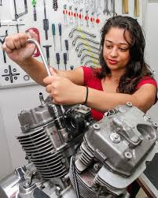
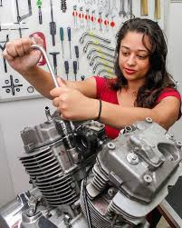

|
|
| Base salarial: Nacional e Internacional | |
| Nacional: RS$6.000 á RS$ 18.000 | Internacional: US$10.000 á US$18.200 |
| Faculdade particular | Duração | Valor | Faculdade particular | Duração | Vagas |
| UNIP | 5 ANOS | RS$674,10 | UFPR | 5 ANOS | 7,38 |
| UNIFAEL | 4 ANOS | RS$298,87 | UNIOESTE | 5 ANOS | 4,80 |
| UNIASSELVI | 5 ANOS | RS$714,83 | UTFPR | 5 ANOS | 2,03 |
|
UNIASSELVI GRADE CURRICULAR:
1º Semestre 1- Ciências do Ambiente 2- Conceitos de Administração e Ética Empresarial 3- GO - Projeto de Vida 4- Introdução à Engenharia 2º Semestre 5- Cálculo Diferencial e Integral I 6- Física Geral e Experimental I 7- Geometria Analítica e Álgebra Linear 8- Produção do Conhecimento Científico, Tecnológico e Disrupção 3º Semestre 9- Cálculo Diferencial e Integral II 10- Desenho Técnico 11- Física Geral e Experimental II 12- Mentalidade Criativa e Empreendedora 4º Semestre 13- Ciências dos Materiais 14- Ergonomia e Segurança do Trabalho 15- Estudo Contemporâneo e Transversal: Indústria e Transformação Digital 16- Estudo Contemporâneo e Transversal: Inovação e Pensamento Criativo 17- Programação e Cálculo Numérico 18- Química Geral e Experimental 5º Semestre 19- Engenharia Econômica 20- Estatística e Probabilidade 21- Estudo Contemporâneo e Transversal: Leitura de Imagens, Gráficos e Mapas 22- Estudo Contemporâneo e Transversal: Propriedade Intelectual 23- Fenômenos de Transporte 24- Mecânica e Resistência dos Materiais 6º Semestre 25- Automação Industrial 26- Estudo Contemporâneo e Transversal: Direitos Humanos, Cidadania e Inclusão 27- Estudo Contemporâneo e Transversal: Relações Étnico-Raciais e Diferentes Culturas 28- Manutenção Industrial 29- Materiais de Construção Mecânica 30- Planejamento e Controle da Produção 7º Semestre 31- Acionamentos Elétricos 32- Engenharia do Produto 33- Estudo Contemporâneo e Transversal: Protagonismo e Autonomia Intelectual Criativa 34- Estudo Contemporâneo e Transversal: Relação de Consumo e Sustentabilidade 35- Fundição e Soldagem 36- Termodinâmica 8º Semestre 37- Elementos de Máquinas 38- Estudo Contemporâneo e Transversal: Administração de Conflito 39- Estudo Contemporâneo e Transversal: Inteligência Emocional 40- Máquinas de Fluxo 41- Sistemas Hidráulicos e Pneumáticos 42- Tubulações e Instalações Industriais 9º Semestre 43- Confiabilidade de Sistemas 44- Estágio Supervisionado 45- Estudo Contemporâneo e Transversal: Compliance 46- Estudo Contemporâneo e Transversal: Gestão de Indicadores 47- Projeto Mecânico 10º Semestre 48- Estudo Contemporâneo e Transversal: Comunicação Assertiva e Interpessoal 49- Estudo Contemporâneo e Transversal: Gestão do Conhecimento 50- Máquinas Térmicas e Refrigeração 51- Processos de Fabricação Mecânica e Metrologia 52- Trabalho de Conclusão de Curso 53- Usinagem e Conformação 54- Vibrações Mecânicas e Acústicas |
|
UNIFAEL GRADE CURRICULAR: Ensino Digital Lingua Brasileira de Sinais - Libras (Disciplina Optativa) Optativa I Optativa II Optativa III Cálculo Diferencial Desenho Técnico e Representação Gráfica Desenvolvimento Sustentável e Direitos Individuais Engenharia e Segurança do Trabalho Ensino Digital Quimica Aplicada A Engenharia Administração e Economia Criativa Atividades Práticas Interdisciplinares de Extensão I Cálculo Integral Fisica do Movimento Geometria Analitica e Algebra Linear Métodos Computacionais Cálculo Vetorial e Edo Desenho Universal Eletricidade e Magnetismo Fenômenos Termoquímicos Fundamentos da Mecânica dos Sólidos e de Resistencia dos Materiais Inteligência Estatistica para Engenharia Atividades Práticas Interdisciplinares de Extensão II Ciências dos Materiais Dinâmica Empreendedorismo Fenômenos dos Transportes Metodologia da Pesquisa Transferência de Calor Atividades Práticas Interdisciplinares de Extensão III Desenho Técnico MecânicoMateriais de Construção Mecânica Mecânica Aplicada Resistência dos Materiais Aplicada a Engenharia Mecânica Termodinâmica Avançada Usinagem e Máquinas Operatrizes Atividades Práticas Interdisciplinares de Extensão IV Elementos de Máquina Ensaios Mecânicos Estágio Supervisionado I (Engenharia Mecânica) Gestão da Qualidade Instalações e Projetos Industriais Metrologia e Análise Dimensional Sistemas Hidráulicos e Pneumáticos Atividades Práticas Interdisciplinares de Extensão V Engenharia de Sistemas Térmicos Estágio Supervisionado II (Engenharia Mecánica) |
|
UNIP GRADE CURRICULAR: Algoritmos e Programação para Engenheiros (Phyton) Atividades Complementares Atividades Práticas Supervisionadas Atuação Junto à Pessoa Idosa (Optativa) Automação de Sistemas Inteligentes para a Indústria Cálculo de Funções de Várias Variáveis: Teoria e Aplicações Ciência de Dados Aplicada a Indústria (Power BI) Ciência e Engenharia dos Materiais Ciências Sociai Comunicação e Expressão Desenho Técnico Assistido por Computador Design de Software Aplicado a Engenharia Mecânic Dinâmica das Máquinas Direitos Humanos Economia e Administração Educação Ambiental Elementos de Máquinas Eletromobilidade (Veículos Híbridos e Elétricos) Empreendedorismo e Inovação Engenharia Auxiliada por Computador Engenharia Econômica Engenharia Mecânica Integrada Engenharia Mecânica Interdisciplinar Ergonomia Estágio Supervisionado Estática nas Estruturas Estruturas Hiperestática Estudos Disciplinares Ética, Legislação Profissional e Noções de Direito Fabricação Mecânica e Metrologia Fenômenos de Transporte Ferramentas de Inteligência Artificial Física Conceitual para Engenharia Física do Movimento: Cinemática e Dinâmica da Partícula Fundamentos de Cálculo Aplicados a Engenharia Fundamentos de Equações Diferenciais Fundamentos de Termodinâmica para Engenharia Fundamentos de Circuitos Elétricos Geometria Analítica e Vetores na Engenharia: Aplicações Práticas Gestão Ambiental (Planejamento Energético), Engenharia e seus Desafio Homem e Sociedade Instalações Térmicas Inteligência Artificial da Indústria Interfaces Eletromecânicas Interpretação e Produção de Textos Língua Brasileira de Sinais - LIBRAS 20 Manufatura Ativa Manutenção Industrial Máquinas de Fluxo Máquinas Hidráulicas e Pneumáticas Marketing Pessoal (Optativa) Materiais de Construção Mecânica Aplicada Mecânica dos Fluídos Mecânica Geral: Cinemática e Dinâmica dos Sólido Metodologia do Trabalho Acadêmico Métodos de Pesquisa Modelagem para EngenhariaPrincípios de Eletricidade Básica Princípios de Gestão da Qualidade Princípios de Oscilações, Ondas e Magnetismo Probabilidade e Estatística Processos de Conformação e Usinagem Processos de Fabricação Programação de Dispositivos Móveis (APP Inventor) Projetos de Máquinas Projetos Mecânicos Química Básica Química Tecnológica e Ambiental Refrigeração e Ar Condicionado Relações Étnico-Raciais e Afrodescendência Resistência dos Materiais Robótica Sistemas de Energias Renováveis micos Supervisão de Estágio Teoria das Estruturas Mecânicas Termodinâmica Aplicada Tópicos de Atuação Profissional - Engenharia Mecânica Tópicos de Informática Trabalho de Curso I Trabalho de Curso II Trabalho de Curso II - Práticas Supervisionadas Transferência de Calor Transmissão de Calor Vibrações Mecânicas |
|
UNIOESTE GRADE CURRICULAR 1º Período Introdução à Engenharia Matemática 1 Física 1 Desenho Técnico 2º Período Cálculo Diferencial e Integral 1 Física 2 Química Geral Geometria Descritiva 3º Período Cálculo Diferencial e Integral 2 Física 3 Álgebra Linear Fundamentos de Materiais 4º Período Máquinas Elétricas Cálculo Numérico Dinâmica Conformação Plástica Fundição Termodinâmica 1 5º Período Soldagem Usinagem Convencional Termodinâmica 2 Mecânica dos Fluidos 1 Eletrônica Aplicada à Engenharia Mecânica Mecânica dos Sólidos 1 6º Período Estágio Supervisionado Mecânica dos Sólidos 2 Mecanismos Transferência de Calor 1 Mecânica dos Fluidos 2 Usinagem CNC Gestão Ambiental 7º Período Pneumática e Hidráulica Fundamentos de Engenharia de Segurança do Trabalho Análise de Custos Industriais Vibrações Elementos de Máquinas 1 Transferência de Calor 2 8º Período Gestão da Produção Elementos de Máquinas 2 Engenharia Econômica Gerenciamento de Projetos Empreendedorismo Manutenção Mecânica Laboratório de Ciências Térmicas Metodologia de Projeto de Produto Comunicação e Metodologia Científica UFPR GRADE CURRICULAR: 1 Periodo Pré-Cálculo Introdução à Engenharia Mecânica Geometria Analítica Linguagem de Programação Desenho Mecânico I 2 Periodo Física I Cálculo 1 Álgebra Linear Aplicada Estatística Aplicada Química Tecnológica 3 Periodo Física II Física Experimental I Cálculo 2 Estática Ciência dos Materiais Metrologia e Instrumentação Termodinâmica I 4 Periodo Física III Cálculo 3 Métodos Matemáticos para Engenharia I Mecânica dos Sólidos I Dinâmica Materiais Metálicos Termodinâmica I 5 Periodo: MÉTODOS MATEMÁTICOS PARA ENGENHARIA II Métodos Matemáticos para Engenharia II Cálculo Numérico Mecânica dos Sólidos II Mecanismos Materiais Não Metálicos Fundição Mecânica dos Fluidos 6 Periodo VIBRAÇÕES MECÂNICAS VIBRAÇÕES MECÂNICAS (X) LABORATÓRIO DE MATERIAIS LABORATÓRIO DE MATERIAIS (X) PROCESSOS DE SOLDAGEM (X) USINAGEM USINAGEM (X) MECÂNICA DOS FLUÍDOS II MECÂNICA DOS FLUÍDOS II (X) TRANSFERÊNCIA DE CALOR E MASSA I 7 Periodo: APLICACÕES ELÉTRICAS APLICACÕES ELÉTRICAS (X) ELEMENTOS DE MÁQUINAS I ELEMENTOS DE MÁQUINAS I (X) SELEÇÃO DE MATERIAIS SELEÇÃO DE MATERIAIS (X) SELEÇÃO DE MATERIAIS EAD SELEÇÃO DE MATERIAIS EAD (X) CONFORMAÇÃO CONFORMAÇÃO (X) CONFORMAÇÃO EAD CONFORMAÇÃO EAD (X) TRANSFERÊNCIA DE CALOR E MASSA II TRANSFERÊNCIA DE CALOR E MASSA II (X) MÁQUINAS HIDRÁULICAS MÁQUINAS HIDRÁULICAS (X) 8 Periodo: ELEMENTOS DE MÁQUINAS II ELEMENTOS DE MÁQUINAS II (X) FUNDAMENTOS DE CONTROLE DE SISTEMAS FUNDAMENTOS DE CONTROLE DE SISTEMAS (X) ENGENHARIA ECONÔMICA ENGENHARIA ECONÔMICA (X) ENGENHARIA ECONÔMICA EAD ENGENHARIA ECONÔMICA EAD (X) MÁQUINAS TÉRMICAS I MÁQUINAS TÉRMICAS I (X) MÁQUINAS TÉRMICAS E EAD MÁQUINAS TÉRMICAS I EAD (X) REFRIGERAÇÃO E CLIMATIZAÇÃO REFRIGERAÇÃO E CLIMATIZAÇÃO (X) 9 Periodo: PROJETO DE PRODUTO PROJETO DE PRODUTO (X) MÁQUINAS TÉRMICAS II MÁQUINAS TÉRMICAS II (X) MÁQUINAS TÉRMICAS II EAD MÁQUINAS TÉRMICAS II EAD (X) LABORATÓRIO DE CIÊNCIAS TÉRMICAS TRABALHO DE CONCLUSÃO DO CURSO I TRABALHO DE CONCLUSÃO DO CURSO I (X) ESTÁGIO SUPERVISIONADO ESTÁGIO SUPERVISIONADO (X) 10 Periodo: ENGENHARIA AMBIENTAL ENGENHARIA AMBIENTAL (X) HUMANIDADES HUMANIDADES (X) PLANEJAMENTO DE INDÚSTRIAS MECÂNICAS PLANEJAMENTO DE INDÚSTRIAS MECÂNICAS (X) PLANEJAMENTO DE INDÚSTRIAS MECÂNICAS EAD PLANEJAMENTO DE INDÚSTRIAS MECÂNICAS EAD (X) TRABALHO DE CONCLUSÃO DO CURSO II |
|
UTFPR GRADE CURRICULAR 1º Período Física Teórica 1 Computação 1 Cálculo Diferencial e Integral 1 Geometria Analítica Desenho Técnico Introdução à Engenharia Mecânica 2º Período Física Teórica 2 Álgebra Linear Cálculo Diferencial e Integral 2 Desenho Auxiliado por Computador 1 Fundamentos de Ciência dos Materiais Conhecido 3º período Introdução De Violão Popular, Teoria Musical E Prática De Canto 1 Introdução De Violão Popular, Teoria Musical E Prática De Canto 2 Tópicos De Apreciação Musical Composição E Elementos De Música Comunicação Oral E Escrita História Da Profissão Docente Pesquisa Em Educação Psicologia Da Educação Didática Currículo e Conhecimento Escolar Gestão Escolar Política Educacional Libras Fundamentos De Primeiros Socorros Prática De Grupo E Interações Humanas Com A Música Design Thinking Para Desenvolvimento De Novos Produtos Inovação Tecnológica e Financiamento Noções Jurídicas Para Empreendedores Eletricidade Instrumentação Industrial Programação Matemática Introdução À Estatística Dança E Tecnologia Questões Contemporâneas Do Corpo Filosofia Da Ciência E Da Tecnologia Fundamentos Da Ética Teoria Das Ciências Humanas Metropolização Contemporânea: Tecnologia e Território História Da Técnica E Da Tecnologia História Geral Da Economia Capitalismo Contemporâneo e Economia Política Psicologia Do Trabalho Relações Interpessoais, Grupo E Poder Sociologia Tecnologia E Sociedade Tecnologia, Trabalho E Saúde Sociedade E Política No Brasil Sociedade E Política No Paraná Política, Instituições e Cidadania no Paraná Tecnologia Social e Economia Solidária Presença Africana No Brasil: Tecnologia, Trabalho E Cultura Presença Africana No Brasi Direitos Humanos, Segurança e Diversidade Dimensão Ambiental Na Gestão Urbana Tecnopolíticas Da Sociedade Contemporânea Física Experimental 1 Física Experimental 2 Física Teórica 4 Fundamentos De Administração Fundamentos De Economia Fundamentos De Finanças Fundamentos De Gestão De Pessoas Fundamentos De Marketing Álgebra Linear Avançada Equações Diferenciais Ordinárias Análise De Fourier E Transformada Z Introdução à Análise Pesquisa Operacional Variáveis Complexas Desenho Auxiliado Por Computador 2 Estática Tratamentos Térmicos Manufatura Integrada Manufatura Aditiva Programação De Robôs Controle Estatístico de Processo Simulação Tecnologia Assistiva Manufatura Avançda E Indústria 4.0 Dinâmica Dos Fluidos Computacional Aplicada Dinâmica Dos Materiais Poliméricos Escoamento De Óleo E Gás Em Tubulações Fundamentos De Combustão Fundamentos De Engenharia De Petróleo Fundamentos E Aplicações De Micro E Nanof Introdução À Dinâmica Dos Fluidos Introdução À Dinâmica Dos Fluidos Computacionais Máquinas De Fluxo Meios Porosos: Motores De Combustão 4º período Máquinas Elétricas Cálculo Numérico Dinâmica Conformação Plástica Fundição Termodinâmica Ensaios de Materiais Materiais Cerâmicos e Poliméricos 5º período Soldagem Usinagem Convencional Termodinâmica 2 Mecânica dos Fluidos 1 Eletrônica Aplicada à Engenharia Mecânica Mecânica dos Sólidos 1 6º Período Estágio Supervisionado Mecânica dos Sólidos 2 Mecanismos Transferência de Calor 1 Mecânica dos Fluidos 2 Usinagem CNC Gestão Ambiental Sistemas deGestão 7º Período Pneumática e Hidráulica Fundamentos de Engenharia de Segurança do Trabalho Análise de Custos Industriais Vibrações Elementos de Máquinas 1 Transferência de Calor 2 8º Período Gestão da Produção Elementos de Máquinas 2 Engenharia Econômica Gerenciamento de Projetos Empreendedorismo Manutenção Mecânica Laboratório de Ciências Térmicas Metodologia de Projeto de Produto Comunicação e Metodologia Científica 9 Período: trabalho de conclusão de curso 1 10 Período: trabalho de conclusão de curso 2 |
|
UFPR GRADE CURRICULAR 1 Periodo Pré-Cálculo Introdução à Engenharia Mecânica Geometria Analítica Linguagem de Programação Desenho Mecânico I 2 Periodo Física I Cálculo 1 Álgebra Linear Aplicada Estatística Aplicada Química Tecnológica 3 Periodo Física II Física Experimental I Cálculo 2 Estática Ciência dos Materiais Metrologia e Instrumentação Termodinâmica I 4 Periodo Física III Cálculo 3 Métodos Matemáticos para Engenharia I Mecânica dos Sólidos I Dinâmica Materiais Metálicos Termodinâmica I 5 Periodo MÉTODOS MATEMÁTICOS PARA ENGENHARIA II Métodos Matemáticos para Engenharia II Cálculo Numérico Mecânica dos Sólidos II Mecanismos Materiais Não Metálicos Fundição Mecânica dos Fluidos 6 Periodo VIBRAÇÕES MECÂNICAS VIBRAÇÕES MECÂNICAS (X) LABORATÓRIO DE MATERIAIS LABORATÓRIO DE MATERIAIS (X) PROCESSOS DE SOLDA PROCESSOS DE SOLDAGEM (X) USINAGEM USINAGEM (X) MECÂNICA DOS FLUÍDOS II MECÂNICA DOS FLUÍDOS II (X) TRANSFERÊNCIA DE CALOR E MASSA I 7 Periodo APLICACÕES ELÉTRICAS APLICACÕES ELÉTRICAS (X) ELEMENTOS DE MÁQUINAS I ELEMENTOS DE MÁQUINAS I (X) SELEÇÃO DE MATERIAIS SELEÇÃO DE MATERIAIS (X) SELEÇÃO DE MATERIAIS EAD SELEÇÃO DE MATERIAIS EAD (X) CONFORMAÇÃO CONFORMAÇÃO (X) CONFORMAÇÃO EAD CONFORMAÇÃO EAD (X) TRANSFERÊNCIA DE CALOR E MASSA II TRANSFERÊNCIA DE CALOR E MASSA II (X) MÁQUINAS HIDRÁULICAS MÁQUINAS HIDRÁULICAS (X) 8 Periodo ELEMENTOS DE MÁQUINAS II ELEMENTOS DE MÁQUINAS II (X) FUNDAMENTOS DE CONTROLE DE SISTEMAS FUNDAMENTOS DE CONTROLE DE SISTEMAS (X) ENGENHARIA ECONÔMICA ENGENHARIA ECONÔMICA (X) ENGENHARIA ECONÔMICA EAD ENGENHARIA ECONÔMICA EAD (X) MÁQUINAS TÉRMICAS I MÁQUINAS TÉRMICAS I (X) MÁQUINAS TÉRMICAS E EAD MÁQUINAS TÉRMICAS I EAD (X) REFRIGERAÇÃO E CLIMATIZAÇÃO REFRIGERAÇÃO E CLIMATIZAÇÃO (X) 9 Periodo PROJETO DE PRODUTO PROJETO DE PRODUTO (X) MÁQUINAS TÉRMICAS II MÁQUINAS TÉRMICAS II (X) MÁQUINAS TÉRMICAS II EAD MÁQUINAS TÉRMICAS II EAD (X) LABORATÓRIO DE CIÊNCIAS TÉRMICAS TRABALHO DE CONCLUSÃO DO CURSO I TRABALHO DE CONCLUSÃO DO CURSO I (X) ESTÁGIO SUPERVISIONADO ESTÁGIO SUPERVISIONADO (X) 10 Periodo ENGENHARIA AMBIENTAL ENGENHARIA AMBIENTAL (X) HUMANIDADES HUMANIDADES (X) PLANEJAMENTO DE INDÚSTRIAS MECÂNICAS PLANEJAMENTO DE INDÚSTRIAS MECÂNICAS (X) PLANEJAMENTO DE INDÚSTRIAS MECÂNICAS EAD PLANEJAMENTO DE INDÚSTRIAS MECÂNICAS EAD (X) TRABALHO DE CONCLUSÃO DO CURSO II. |
|
|
Base salarial: Nacional e Internacional |
| Nacional: RS$5.000 á RS$ 10.000 | Internacional: US$3.500 á US$5.500 |
| Faculdade particular | Duração | Valor | Faculdade particular | Duração | Vagas |
| UNIP | 4 ANOS | RS$410,00 | UTFPR | 4 ANOS | 4,19 |
| UNOPAR | 4 ANOS | RS$99,00 | UNIOESTE | 4 ANOS | 4,77 |
| UNIMATER | 4 ANOS | RS$1.065,00 | UNICENTRO | 4 ANOS | 1,18 |
|
UNIP GRADE CURRICULAR
Administração do Relacionamento com o Cliente Administração Estratégica Administração Financeira Administração Integrada Administração Interdisciplinar Análise das Demonstrações Financeiras Atividades Complementares Atividades Práticas Supervisionadas Atuação Junto à Pessoa Idosa (Optativa) Ciências Sociais Comportamento Humano nas Organizações Comunicação e Expressão Contabilidade Custos e Preços Desenvolvimento Sustentável (Optativa) Direito nas Organizações Direitos Humanos Economia e Gestão do Setor Público Economia e Negócios Educação Ambiental Elaboração e Análise de Projetos Empreendedorismo e Plano de Negócios Estágio Curricular Estatística Estatística Aplicada Estruturas Organizacionais Estudos Disciplinares Evolução do Pensamento Administrativo Geopolítica, Regionalização e Integração Gestão das Informações Gestão de Operações Produtivas Gestão de Pessoas Gestão de Suprimentos e Logística Gestão Mercadológica Governança Corporativa Homem e Sociedade Instituições de Direito Interpretação e Produção de Textos Liderança: Atributos e Atribuições Língua Brasileira de Sinais - LIBRAS Marketing Pessoal (Optativa) Matemática Matemática Aplicada Matemática Financeira Metodologia do Trabalho Acadêmico Métodos de Pesquisa Pesquisa Operacional Processos Decisórios Processos Organizacionais Relações Étnico-Raciais e Afrodescendência Responsabilidade Social das Organizações Tecnologias da Informação Tópicos de Atuação Profissional Administração |
|
UNIMATER GRADE CURRICULAR:
1º Semestre: Humanidades Comportamento Organizacional Gestão do Agronegócio Negociação Gestão Sustentável nas Organizações Projeto Integrador Extensionista I 2º Semestre: Filosofia Ética Direito Empresarial Empreendedorismo Fundamentos de Administração e Processos Teoria Geral de Administração ● Projeto Integrador Extensionista II 3º Semestre: Comunicação e Expressão Contabilidade Empresarial I Finanças Básicas Ferramentas de Marketing ● Pesquisa de Mercado Projeto Integrador Extensionista III 4º Semestre: Raciocínio Lógico Finanças Empresariais Marketing Digital Marketing Estratégico Contabilidade de Custos Projeto Integrador Extensionista IV 5º Semestre: Orçamento Empresarial Métodos Gestão de Pessoas Gestão de Estoques Finanças Corporativas Projeto Integrador Extensionista V 6º Semestre: Gestão da Qualidade Metodologia de Pesquisa Gestão da Produção Gestão de Serviços Gestão Estratégica de Pessoas Práticas Profissionais I 7º Semestre: Jogos de Empresa Consultoria Empresarial Práticas Profissionais II Microeconomia Logística Desenvolvimento Gerencial 8º Semestre: Estagiário de Negócios Macroeconomia Planejamento Estratégico Optativa I Inteligência de negócios Projeto Integrador Extensionista VI |
|
UTFPR GRADE CURRICULAR:
1º Período:> Comunicação Linguística e Empresarial ● Estatística Aplicada à Administração Estudos Críticos em Administração Empreendedorismo Evolução do Pensamento em Marketing Fundamentos de Administração ● Filosofia Gestão da Inovação Introdução à Contabilidade Introdução à Análise Técnica em Bolsa de Valores Jogos de Empresas A Matemática Aplicada à Administração Metodologia Científica Mercado de Capitais Psicologia Tecnologia e Gestão 2º Período> Estrutura e Análise das Demonstrações Financeiras Comportamento Humano em Organizações Administração de Custos Gestão de Marketing Introdução à Economia Matemática Financeira Métodos Quantitativos de Projeção e Agrupamentos Sistema de Informação Gerencial e Métodos Sociologia 3º Período: > Administração Financeira e Orçamentária Contabilidade Gerencial Economia Gestão Estratégica-Ambiental Gestão de Projetos Instituição de Direito Público e Privado ● Logística e Pesquisa em Administração ● Administração de Recursos Humanos 4º Período: > Administração Estratégica Administração de Direito Comercial e Societário Husa Economia Empresarial Estudos Organizacionais Gestão do Conhecimento Trabalho |
|
UNIOSTE GRADE CURRICULAR:
1º ano: Atividades Acadêmicas Complementares Formação Independente Contabilidade Empresarial Disciplina de Formação Diferenciada Estatística Instituições de Direito Público e Privado Operações Financeiras Pesquisa em Administração I Psicologia Sociologia Teorias da Administração 2º ano: Administração de Custos Administração de Recursos Humanos Administração de Recursos Materiais e Patrimoniais Análise Econômica - Micro e Macro Disciplina de Formação Diferenciada Organização, Sistemas e Métodos 3º ano: Administração Financeira e Orçamentária Administração Mercadológica Administração de Produção e Operações Disciplina de Formação Diferenciada Gestão Ambiental Pesquisa em Administração II 4º ano: Administração de Serviços Administração de Sistemas de Informação ● Disciplina de Formação Diferenciada Estratégia Organizacional Estágio Supervisionado em Administração |
|
UNICENTRO GRADE CURRICULAR:
Comportamento Humano nas Organizações Contabilidade Geral Economia Geral Introdução à Administração Financeira Métodos Quantitativos Aplicados à Administração Pesquisa em Administração I Processos Organizacionais Racionalidade e Ética Redação Técnica e Interpretação de Textos Administrativos Teorias da Administração Administração da Produção I Administração do Capital de Giro Administração Mercadológica I Comportamento Organizacional Empreendedorismo e Gestão de Pequenos Negócios Gestão de Materiais e Logística Legislação Social Pesquisa em Administração II Administração da Produção II Administração Estratégica Administração Mercadológica II Estágio Supervisionado I Gestão de Custos e Orçamentos Gestão de Pessoas Gestão de Recursos da Informação Administração Pública Estágio Supervisionado II Barbatana Gestão de Projetos e Negociação Gestão do Agronegócio Gestão Socioambiental Gestão Tributária Negócios Internacionais |
|
UNOPAR GRADE CURRICULAR:
1º Semestre Economia para Negócios Ed. – Cultura Digital Legislação Empresarial Aplicada Métodos Quantitativos Teorias da Administração 2º Semestre Contabilidade Introdutória Ed. – Projeto de Vida Matemática Financeira Metodologia Científica Sistemas de Informação Gerencial 3º Semestre Análise de Custos Ed. – Marketing Digital Gestão de Pessoas Modelos de Gestão Planejamento Financeiro e Orçamentário 4º Semestre Capital de Giro e Análise Financeira Comportamento Organizacional e Negociação Desenvolvimento de Pessoas Ed. Construindo uma Carreira de Sucesso – Negócio Gestão Mercadológica na Era Digital 5º Semestre Análise de Investimentos e Fontes de Financiamento Ed. Mindset Ágil Gestão da Produção Optativa Pesquisa e Inteligência de Marketing 6º Semestre Ed. Design Thinking Empreendedorismo e Inovação Mercado de Capitais Optativa II Responsabilidade Social e Ambiental 7º Semestre Diagnóstico e Intervenção Empresarial Ed. – Empregabilidade Gestão de Projetos Planejamento Estratégico Sociedade Brasileira e Cidadania Trabalho de Conclusão de Curso I 8º Semestre Ed. Desenvolvimento de Carreira Optativa III Pesquisa Trabalho de Conclusão de Curso II |